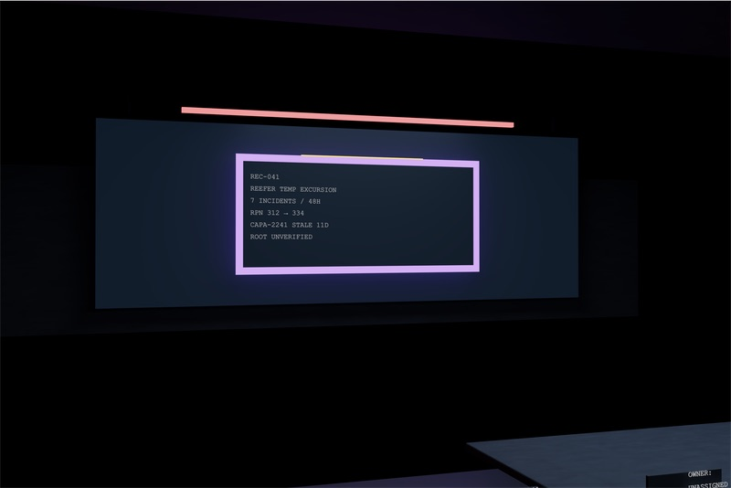
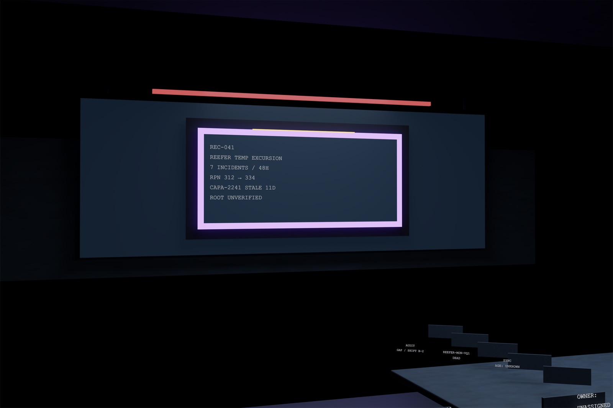
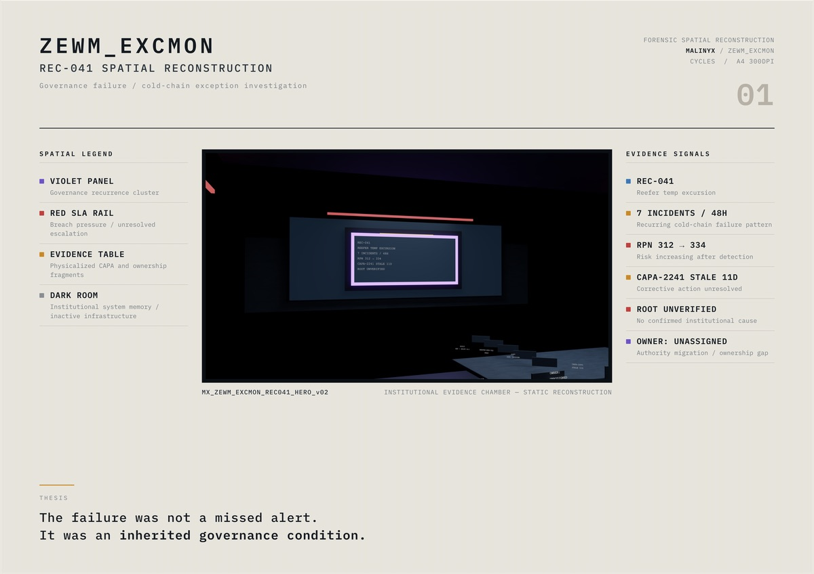
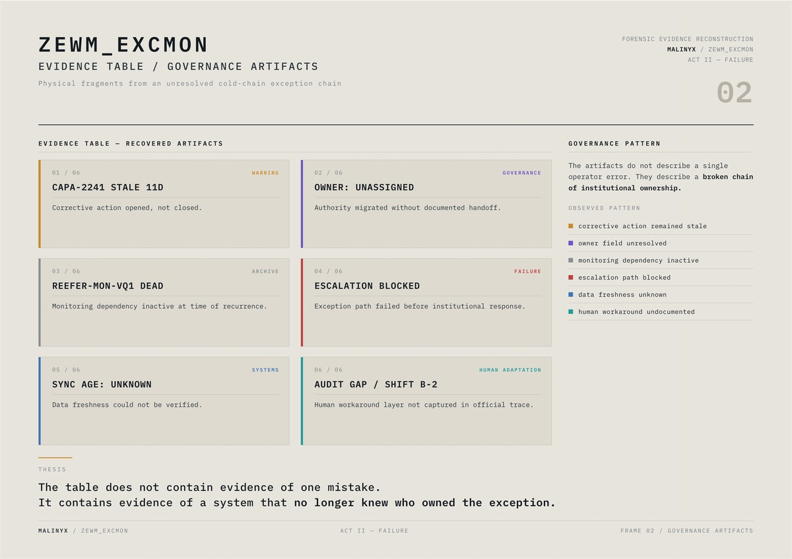
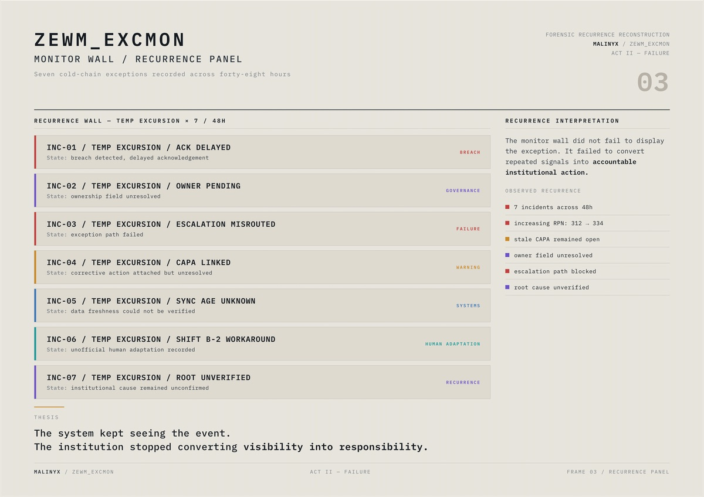
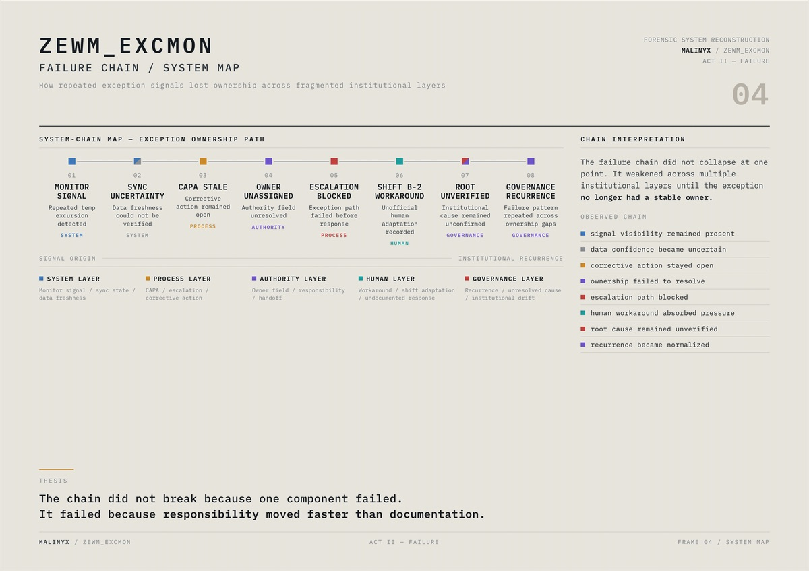
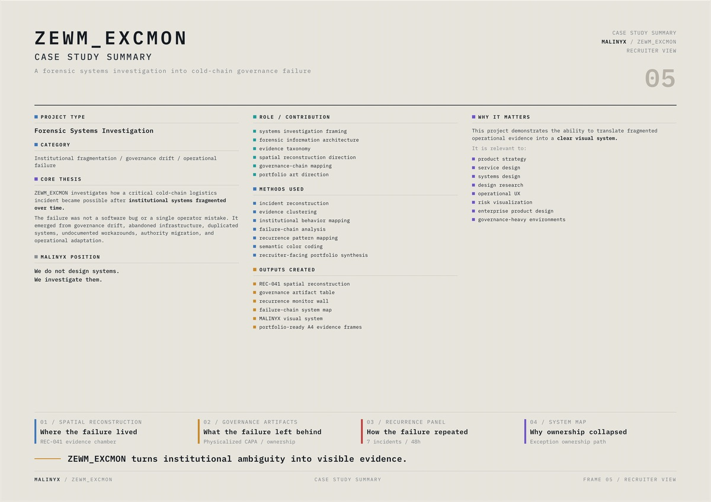
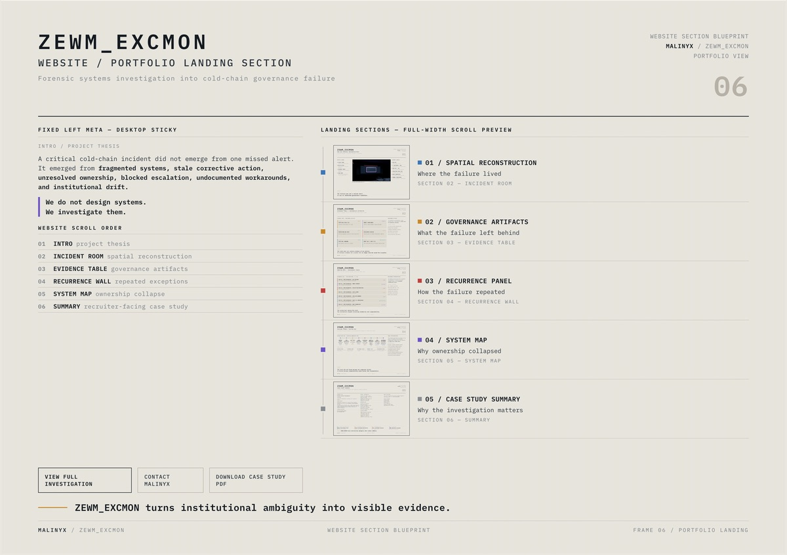

A · v01 · preserved original hero
Exposure 0.60 · light ×1.00 · plaque 3.0 · inset 0.50 · rail strength 3.0, which Filmic washed to salmon. Kept as the preserved original.
Designed · render parameter
[ LAB · AS DESIGNED ][ INVESTIGATION · AS EVIDENCED ] [+]
It was an inherited governance condition. A forensic systems investigation into how a reefer temperature exception, REC-041, lost its owner across fragmented institutional layers — told in six A4 evidence frames.
1Plaque 2.60 × 1.18 m · violet #8B5CF6 · amber breach line #F0A43A along its top edgeSpecified intent
2SLA rails · red #D94B4B · sides 10.4 m at z 2.78 · back 7.2 m at z 2.97Specified intent
3Table 4.0 × 2.0 m, top z 0.80 · six governance plates 0.52 × 0.28 m at its front edgeSpecified intent
4Camera 33 mm at (−2.6, −3.0, 1.70) aimed at the plaque · frustum assumes the default 36 mm sensorSpecified intent

1Plaque 2.60 × 1.18 m · violet #8B5CF6 · emission 3.0 → 3.7 in v02Designed · render parameter
2Back SLA rail · #D94B4B · emission 3.0 → 0.70 in v02, so the red stays red under FilmicDesigned · render parameter
3v02 adds five evidence placards on the table, yawed −0.55 rad to face the cameraDesigned · render parameter
4Camera 33 mm at 1.70 m eye height · a static reconstruction, still image onlyDesigned
Investigation narrative; data provenance not stated. No document says whether REC-041 comes from a real incident.
02 · Question
Why did a reefer temperature excursion keep recurring — seven incidents in 48 hours — without anyone owning it? The investigation argues the cause was not a missed alert or a software bug. Corrective action CAPA-2241 had been open for 11 days. The owner field was unassigned. A monitoring dependency, REEFER-MON-VQ1, was dead; sync age was unknown; escalation was blocked; Shift B-2 ran an undocumented workaround. The method has four steps — incident reconstruction, evidence clustering into a six-category taxonomy, a recurrence map and a failure-chain map — held together by one semantic colour code, so each colour carries one meaning.
03 · Mechanism
Rebuilt live from the frames' own colour tokens. Every figure in this section: investigation narrative; data provenance not stated.
System-chain map · exception ownership pathSignal origin → institutional recurrence
[ Trace the chain ]
Node 08 / 08 · Governance recurrence · governance layer — failure pattern repeated across ownership gaps
The trace follows the order printed on Frame 04. It is a narrative chain, not a timed or measured sequence. The dashed return arc to node 01 is this sheet's reading of “recurrence”; Frame 04 does not draw it. Investigation narrative; data provenance not stated.
It failed because responsibility moved faster than documentation.
Frame 04 · thesis line · designed copy
Recurrence wall · temp excursion × 7 / 48 h
RPN 312 → 334
Risk increasing after detection · two printed values, nothing in between
Evidence table · recovered artifacts
04 · Inside
SystemsFailureWarningGovernanceHuman adaptationArchive






ZEWM_EXCMON · portfolio package
Frames 01–06 in order, copied losslessly from the six locked frame PDFs — no re-encode, no resize, no added pages.
05 · Pigment & material
[ Semantic key · frame CSS, exact ]
Systems
#3E78B8
Authored · frame CSS · monitor signal, sync state
Failure / breach
#C0413F
Authored · frame CSS · escalation, breach
Warning / CAPA
#C98A28
Authored · frame CSS · also the thesis rule
Governance
#6E54C8
Authored · frame CSS · authority, recurrence
Human adaptation
#1E9C9C
Authored · frame CSS · workaround, shift
Archive
#8A8F94
Authored · frame CSS · inactive infrastructure
Bone · plate paper · #E7E4DD · authored · frame CSS
Card panel · #DEDAD0 · authored · frame CSS (frame 01: #DFDBD2)
Plate ink · #141A20 · authored · frame CSS
Investigation ground · #071018 / #0B1520 · authored · generator palette bg00 / bg01
[ Render source → what Filmic shows ]
Plaque violet · #8B5CF6 · authored · generator palette
Rendered lilac · #E0C1F8 · ≈ sampled · v02 (v01 #D4B1F3)
SLA rail red · #D94B4B · authored · generator palette
Breach amber · #F0A43A · authored · generator palette
Rendered pale yellow · #F5E491 · ≈ sampled · v02
Monitor wall · #101C29 · authored · bg02, emissive
Rendered · #162233 · ≈ sampled · about 71% of the frame is near-black
Filmic pushes bright saturated emissives toward white, so the rendered lilac and pale yellow are tone-mapping artefacts. Anything on this sheet that encodes meaning uses the source hex, never the sampled one.
06 · Decisions
| Parameter | v01 | v02 |
|---|---|---|
| Exposure | 0.60 | 0.85 |
| Light multiplier | 1.00 | 1.22 |
| Plaque emission | 3.0 | 3.7 |
| Inset emission | 0.50 | 0.95 |
| Rail emission | 3.0 | 0.70 |
| Reveal plate | — | 2.86 × 1.42 m |
| Evidence placards | — | 5 |
Rail colour in both · #D94B4B · authored · unchanged — only the emission strength moved, so the semantic red never shifts
07 · Claim ledger
| Claim | Value | Level | Qualifier |
|---|---|---|---|
| Incident record | REC-041 · reefer temp excursion | Designed | Investigation narrative; data provenance not stated |
| Recurrence | 7 incidents / 48 h · INC-01 → INC-07 | Designed | Narrative; no incident times are given |
| Risk priority number | RPN 312 → 334 | Designed | Narrative figure; no FMEA worksheet found |
| Corrective action | CAPA-2241 · stale 11 days | Designed | Narrative · “opened, not closed” |
| Root cause | Unverified | Designed | Narrative · no confirmed institutional cause |
| Failure chain | 8 nodes · 5 layers | Designed | As printed on Frame 04 |
| Evidence taxonomy | 6 artifacts · 6 semantic colours | Designed | As printed on Frame 02 |
| Package | 6 pages · A4 landscape 842 × 595 pt · ≈ 3.57 MB | Designed | As listed in the package README · file 3,752,001 bytes |
| Evidence chamber | 14.0 × 11.0 × 3.2 m | Specified intent | Generator constants; see the open item on as-rendered scale |
| Camera | 33 mm at (−2.6, −3.0, 1.70) m · aimed at (0, 5.17, 1.80) | Specified intent | Read from code |
| Render | 3840 × 2160 · Cycles 256 samples · OpenImageDenoise · Filmic · 16-bit · Metal GPU · motion blur off | Designed · render parameter | Settings read from code; output size checked |
| v01 → v02 | Exposure 0.60 → 0.85 · light ×1.22 · plaque 3.0 → 3.7 · inset 0.50 → 0.95 · rail 3.0 → 0.70 | Designed · render parameter | Both renders exist; deltas read from the generator's parameter set |
| Physical evidence | None | Not claimed | A digital investigation package |
08 · Provenance, credits, revisions
| Rev | Date | Change |
|---|---|---|
| 01 | 11 Jun 2026 | REC-041 v01 hero rendered — kept as the preserved original |
| 02 | 11 Jun 2026 | v02 portfolio pass rendered; Frame 01 built around it |
| 03 | 12 Jun 2026 | Frames 02–06 locked; six frames bound into the package PDF |
| 04 | 2 Oct 2026 | Sheet 07: isometric schematic, live chain / wall / table, frames as AVIF; live PNG and PDF links kept |
Dates 01–03 are file dates; the project year is still to be confirmed.
09 · Next specimen
Not a camera backpack.
CLX-CT-01 · creator-tech carry system · designed, CAD blockout · evidence 40% verified
Open sheet 08